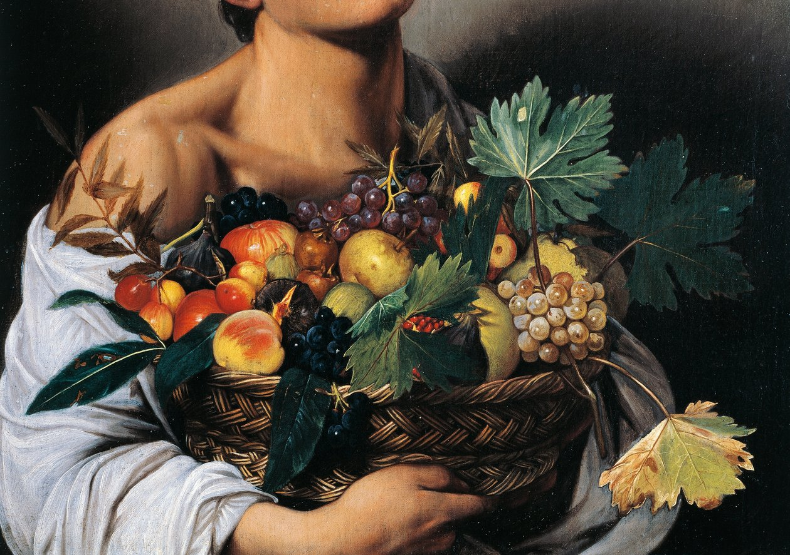

El don divino que salvó al hombre caído
Publicado el 21 de septiembre de 2025Adentrémonos en la vida del pintor que revolucionó el arte encontrando lo sagrado en lo mundano.
Michelangelo Merisi, más conocido como Caravaggio, nació en 1571 en Milán, en el seno de una familia que contaba con cierto prestigio y vínculos con la nobleza local. Su padre, Fermo Merisi, no era un simple obrero, sino un maestro de obras y administrador que trabajaba al servicio de familias nobles relacionadas con Caravaggio(localidad ). Entre ellas se encontraban ramas menores de los Sforza, herederas de la poderosa casa ducal milanesa, y probablemente también los Colleoni-Martinego, titulares en ese tiempo del marquesado de Caravaggio. Este puesto proporcionaba a Fermo un estatus respetable y una proximidad a los círculos de poder lombardos que aseguraban a los Merisi cierta estabilidad económica.
La madre, Lucía Aratori, procedía de una familia acomodada de la localidad de Caravaggio, propietaria de tierras y con una notable presencia en la vida social y religiosa del lugar, hasta el punto de encargarse de la administración de un santuario local. De esta unión nacieron cuatro hijos: Caterina, Giovan Pietro, Giovan Battista y Michelangelo, que creció en un entorno donde se entrelazaban el trabajo artesanal cualificado, la religiosidad cotidiana y la cercanía con los notables de la región.
Sin embargo, la estabilidad duró poco. En 1576, la peste bubónica, un azote constante en la Europa del siglo XVI, golpeó con fuerza a Milán. Como tantas familias, los Merisi huyeron a Caravaggio, el pueblo de origen de Lucía y que acabaría dando su nombre artístico al pintor. Pero la enfermedad los alcanzó. En 1577, cuando Michelangelo tenía apenas seis años, perdió a su padre y a su abuelo a causa de la epidemia. La viuda quedó sola al frente de cuatro hijos y de la administración de las propiedades familiares. La infancia de Caravaggio quedó así marcada por la experiencia temprana de la muerte y la fragilidad de la vida, habituándolo desde niño al duelo, la precariedad y la conciencia de lo efímero. Ese trasfondo vital nutriría más tarde la intensidad emocional, el realismo descarnado y el dramatismo lumínico de su pintura.
El historiador Andrew Graham-Dixon lo sintetiza con claridad: “A los seis años, Caravaggio había perdido a casi todos los varones adultos de su familia. Su temperamento revoltoso y fogoso y su profundo sentimiento de abandono bien pueden tener su origen en aquellos traumáticos acontecimientos”.
A los trece años, en 1584, fue enviado de nuevo a Milán para aprender el oficio de pintor. Entró como aprendiz en el taller de Simone Peterzano, discípulo del gran maestro veneciano Tiziano. Durante cuatro años, aprendió técnicas de dibujo, pintura al óleo y la disciplina de la vida gremial. Allí entró en contacto con dos corrientes que marcarían profundamente su estilo. Por un lado, el manierismo tardío, con su gusto por la elegancia artificiosa y las composiciones complejas. Por otro, el naturalismo lombardo , una corriente más sobria y directa que rechazaba la idealización y buscaba representar la realidad tal como era, con sus rostros vulgares, sus arrugas y sus imperfecciones. Esa tensión entre lo artificioso y lo realista fue el germen de su lenguaje pictórico personal.
El naturalismo lombardo no es un movimiento formal, sino una tendencia pictórica del norte de Italia en el siglo XVI. Se caracteriza por la observación directa de la realidad, la atención a los detalles cotidianos y una representación sobria frente a la idealización manierista.
Historiadores como Roberto Longhi y Mina Gregori destacan su influencia en Caravaggio: artistas como Savoldo, Moretto da Brescia, Lorenzo Lotto y su maestro Simone Peterzano transmitieron este enfoque realista, que Caravaggio llevó a un nivel completamente nuevo en Roma.
En 1588, tras concluir su formación, Caravaggio regresó a vivir con su madre y hermanos en la localidad de Caravaggio. Aceptaba pequeños encargos para iglesias y particulares, lo que le permitió experimentar con los conocimientos adquiridos y empezar a perfilar su propio estilo. Pero la relativa calma se rompió pronto. En torno a 1590, falleció su madre, Lucía Aratori. Con su muerte, Michelangelo, que todavía no había cumplido los veinte años, quedó huérfano de ambos padres. Como hijo varón mayor, heredó las propiedades agrícolas y el modesto patrimonio familiar, pero también una pesada carga emocional que reforzó su carácter solitario e introspectivo.
Los siguientes años estuvieron marcados por decisiones prácticas. Entre 1590 y 1592, Caravaggio vendió gran parte de las tierras heredadas. No lo hizo por capricho, sino para hacer frente a impuestos de herencia, gastos de mantenimiento de las fincas e incluso deudas derivadas de su formación, como materiales de trabajo o libros. Esta liquidación de bienes le permitió reunir el dinero necesario para preparar un viaje que cambiaría para siempre su destino: Roma, el epicentro artístico y espiritual de la Italia de finales del siglo XVI.
Murió en 1610, a los 38 años, en circunstancias misteriosas.
Cuatro siglos después, Caravaggio sigue enseñándonos que la belleza no está en la perfección, sino en la verdad. Que lo sagrado puede encontrarse en los lugares más inesperados. Y que a veces, los artistas más quebrados son los que crean la luz más brillante.
En un mundo obsesionado con las apariencias, Caravaggio nos recuerda que la autenticidad es revolucionaria. Su don divino no fue solo técnico, sino moral: nos enseñó a mirar más allá de las máscaras y encontrar la humanidad en todos nosotros.
La luz que busco no está en los cielos, sino en los rostros de quienes caminan conmigo por las sombras.